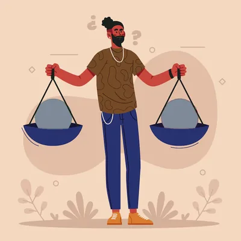

Comparer, jusqu'à 4 territoires

Comparer des communes
Choisissez deux communes ou plus pour voir laquelle est la moins bien servie en postes de santé.
- 1Tapez le nom d'une commune et appuyez sur « Ajouter »
- 2Ajoutez-en une deuxième, jusqu'à quatre
- 3Lisez la comparaison
Plus de détails : scénario 2033 et tous les indicateurs
Tous les indicateurs
Les postes de santé sont évalués par commune (1 pour 10 000 habitants), les centres et hôpitaux par département. Détail dans Méthode & données.